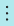

Save and Personalize List Views
When you have set a filter on a list and you want to keep the filter for later, you can save it as a view. For more information about filtering lists, see Setting Filters on Lists.
If views exist, the Views group appears at the top of the filter pane. Views are variations of the list that have been preconfigured with filters. You can define and save as many views as you want per list, and the views will be available to you the next time you open the list, from any device or browser.
To save a view
Open any list page.
Select
 at the top of the list or press Shift+F3 to open the filter pane.
at the top of the list or press Shift+F3 to open the filter pane.Set one or more new filters. For more information, see Setting Filters on Lists.
When you have set the filters, choose the
 icon.
icon.If you set a filter for a list view that that is already saved as a view, the existing view will be updated when you save.
If you are saving a new view, enter a name for the view in the All (Copy) box, such as "Items I own".
Press the Enter key or move the cursor from the text box to accept the name.
If you do not give it a name, it will be named All (Copy).
To rename or remove a view
- For the view that currently displays the list, choose the  icon to see which options are available.
- Choose either the Rename or the Remove action.
Managing Many Views
As the number of views on a page grows, you may need an additional control over how views are presented in the filter pane. With the Personalizing banner, you can hide unwanted views or reorder your views to get the perfect sequence. For more information, see Personalize Your Workspace.
See Also
List Views FAQ
Personalize Your Workspace
Working with Business Central
Change Basic Settings
Change Which Features are Displayed